// WHO AM I?
Hi, I'm Yash, a passionate first-year Computer Science student driven by curiosity and a love for building things. I see every problem as a puzzle and every new technology as a new toolset to master.
This E-Portfolio is my digital journey log — a space where my academic work, personal growth, and professional development come together.
Interests
Building projects, exploring algorithms, and learning new languages.
[ CLICK TO EXPAND ]Strategy and puzzle games that sharpen problem-solving and quick thinking.
[ CLICK TO EXPAND ]Experimenting with new recipes and cuisines — cooking is just another form of problem-solving.
[ CLICK TO EXPAND ]Working out and staying active — discipline in the gym translates to discipline in study.
[ CLICK TO EXPAND ]MY CODING JOURNEY
What started as solving programming homework and past papers during my Computer Science A-Level has grown into a genuine passion for coding. Early on, I discovered how much I enjoyed breaking down complex problems into smaller, logical steps. It was a skill that I first developed while working with Visual Basic during my HSCs. That mindset quickly became one of my strongest tools and got me first prize in Computer Science for Grade 12.
Now, as I pursue my Computer Science degree, I'm diving deeper into Python and expanding my horizons. What began as a course requirement is gradually turning into a real interest, especially in areas like machine learning. At the same time, I've been exploring web development, building projects like this very portfolio using HTML, CSS, and JavaScript to turn ideas into something tangible and interactive.
Beyond coursework, I've also started experimenting with Linux by installing Arch Linux on an old PC. It's been a challenging but rewarding experience that's helping me better understand how systems work under the hood.
That said, my journey has not been without reality checks. Several tough lab tests from my lecturer pushed me out of my comfort zone with its difficulty and unpredictability. But experiences like that have only strengthened my resilience. I was able to complete the challenges, demonstrating not just my Python skills, but also my ability to stay calm, think critically, and solve problems under pressure.
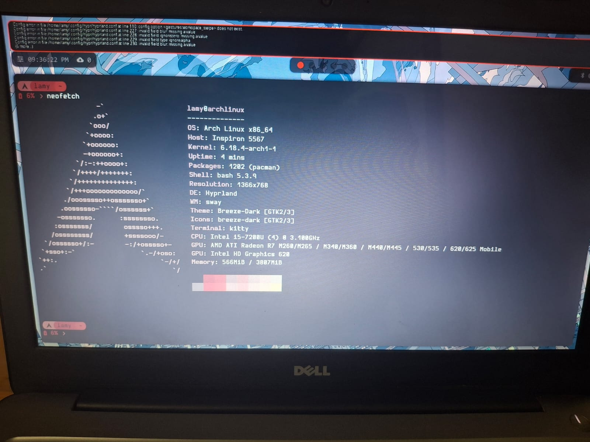
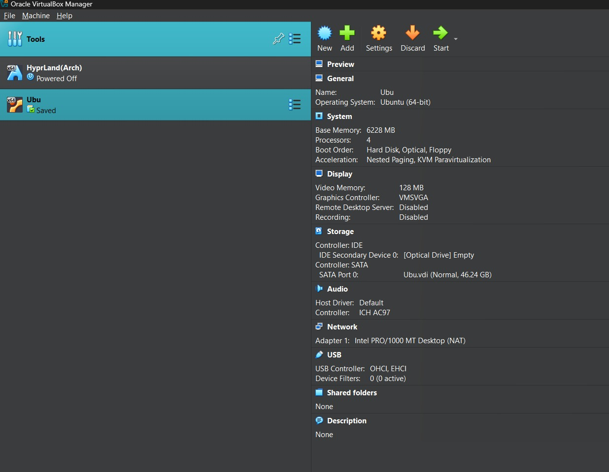
GAMING & PROBLEM SOLVING
Gaming has been a part of my life for as long as I can remember, and over time I've come to appreciate how much it quietly trains the same skills I use in Computer Science. Whether it's planning several moves ahead, managing limited resources, or staying calm when things go wrong — these are lessons the screen has been teaching me all along.
I'm drawn to games that reward thinking over reflexes. The satisfaction of cracking a difficult puzzle or outmanoeuvring an opponent isn't so different from finally fixing a bug or completing a tricky algorithm — both require patience, logic, and a willingness to try again after failing.
Gaming has also shaped how I approach collaboration. Many titles demand clear communication, trust, and defined roles within a team — the same dynamics I've had to navigate in every group assignment this year.
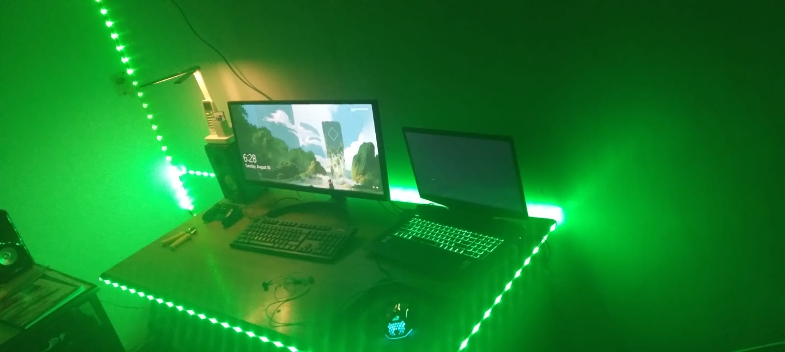
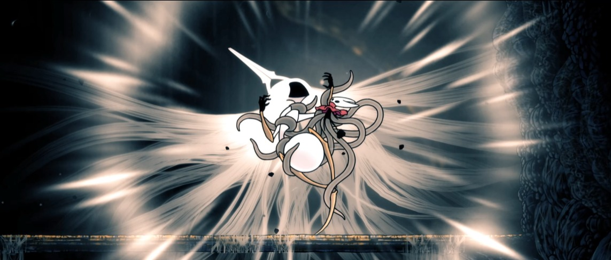
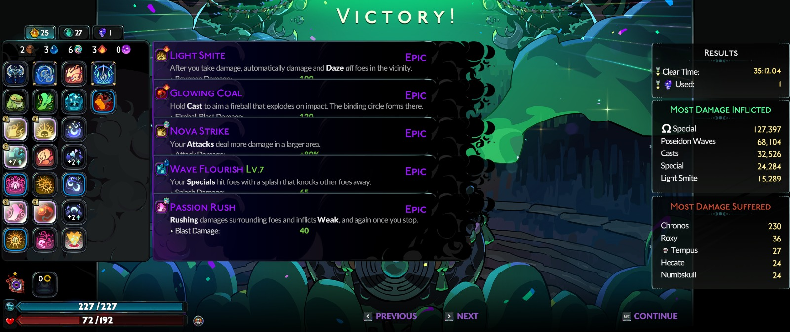
COOKING AS CREATIVITY
Cooking is one of the few activities that completely takes me away from a screen, and I genuinely love it for that. There's something meditative about working through a recipe — following steps precisely, adjusting on the fly when something isn't going right, and ending up with something you can actually taste and share.
I especially appreciate home-cooked food — meals made with care carry a warmth that no takeaway can replicate. Spending time cooking is one of the ways I stay connected to the people I love, and it's become one of my favourite ways to unwind after a long day of studying or debugging.
If I had to draw a parallel: cooking and programming are surprisingly similar. Both require you to follow a logical process, both punish impatience, and both reward you with something satisfying when you get it right. A burnt dish and a runtime error feel equally painful — and equally fixable.
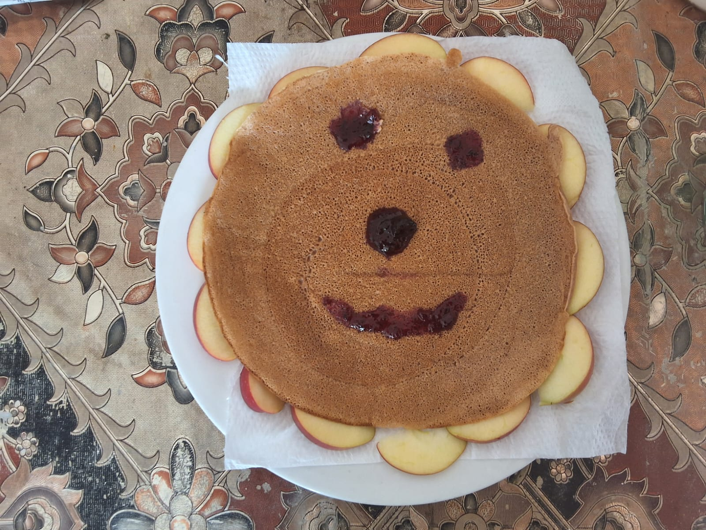
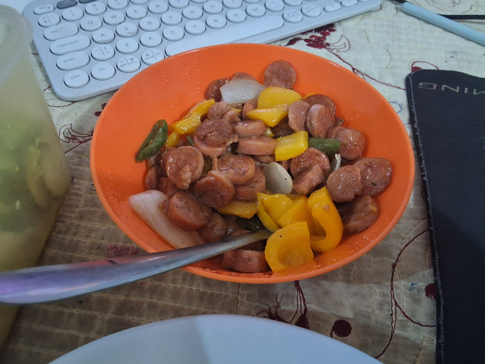
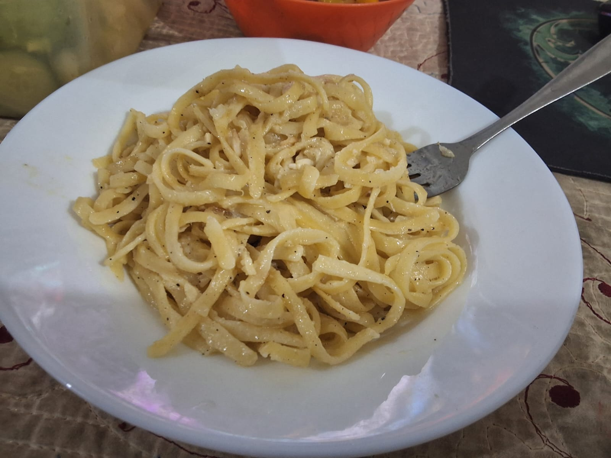
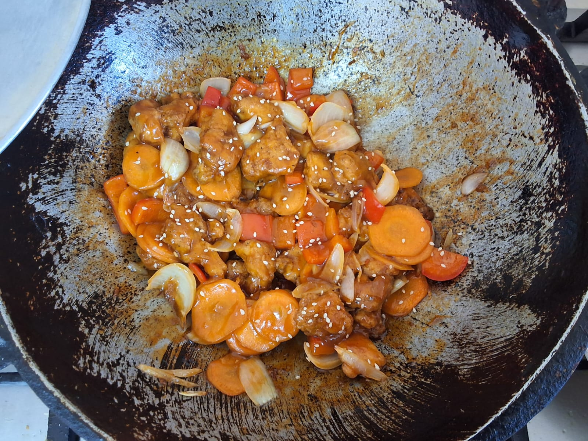
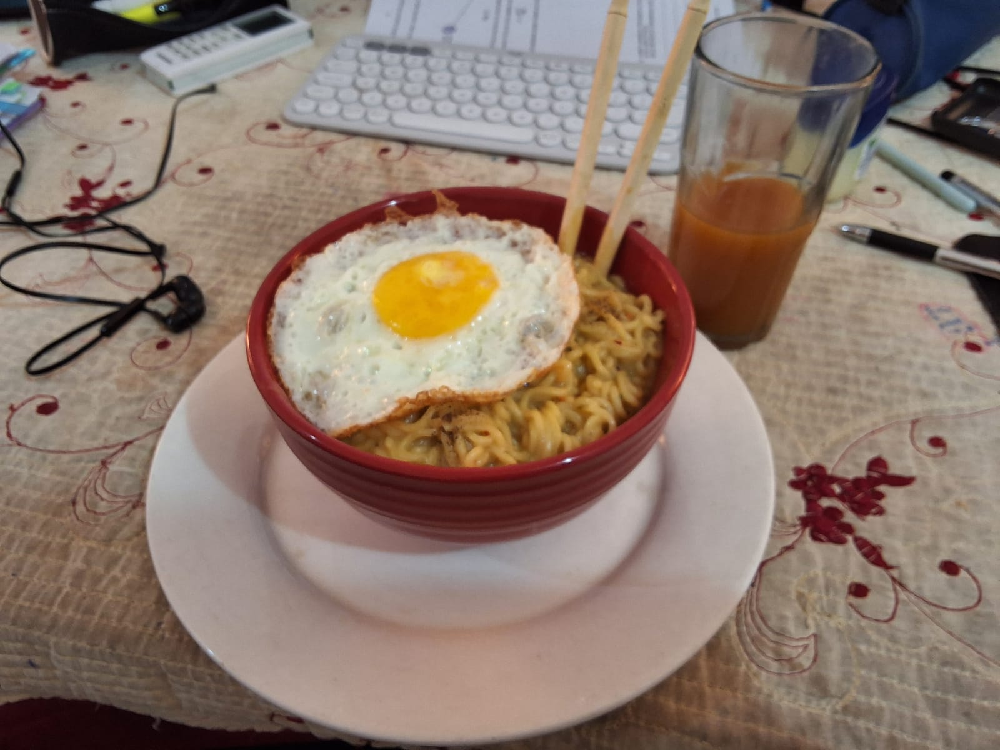
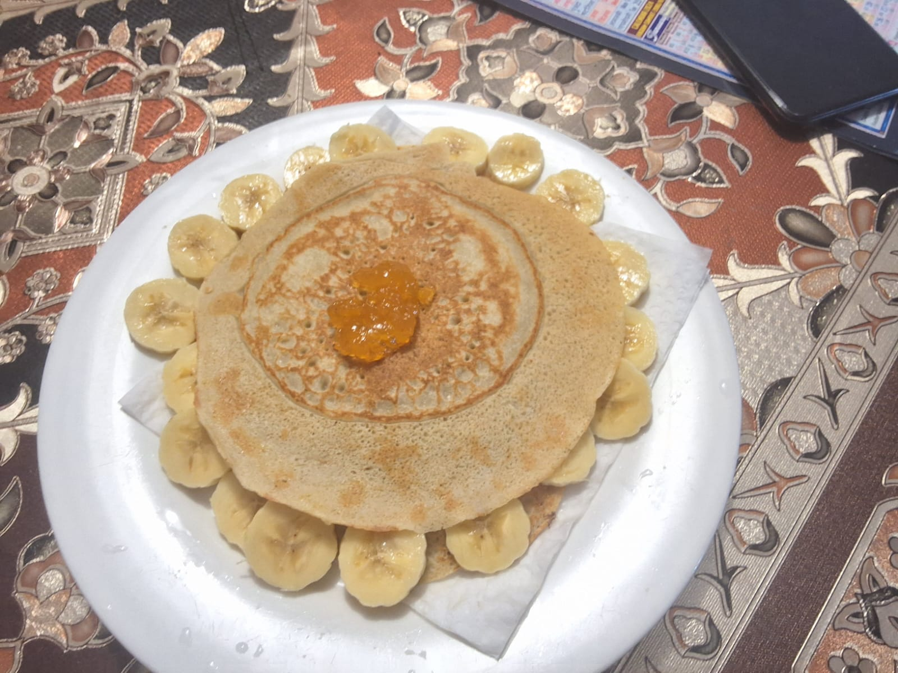
DISCIPLINE THROUGH FITNESS
I won't pretend to be a dedicated gym-goer — "occasionally" is the most honest word for my workout frequency. But when I do train, I genuinely enjoy it. There's a mental reset that comes from physical effort that's hard to replicate anywhere else.
Exercise gives my brain a chance to breathe. After hours of staring at code or writing reports, stepping away and doing something physical helps me come back to problems with a clearer head. Some of my best ideas have come to me mid-workout, when I finally stopped forcing the answer and let my mind wander.
I see fitness the same way I see any long-term project: it doesn't require perfection, it requires consistency. Even occasional effort compounds over time — and that's a mindset I'm trying to carry into my studies and personal development as well.
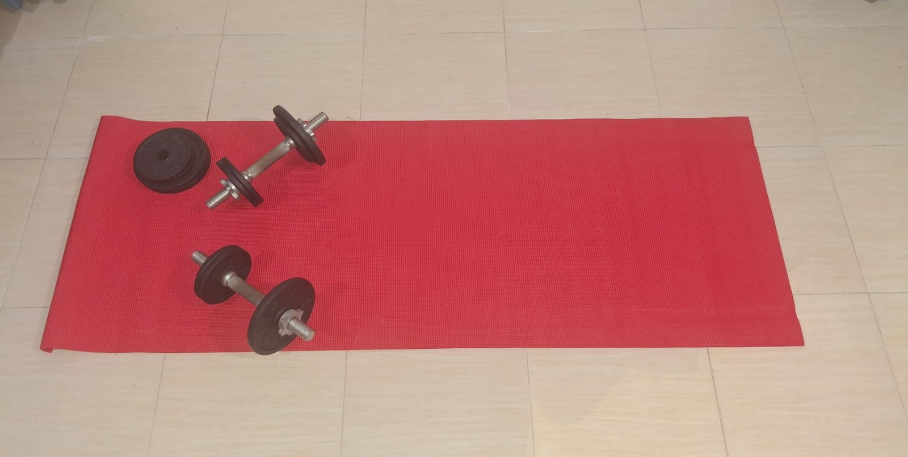